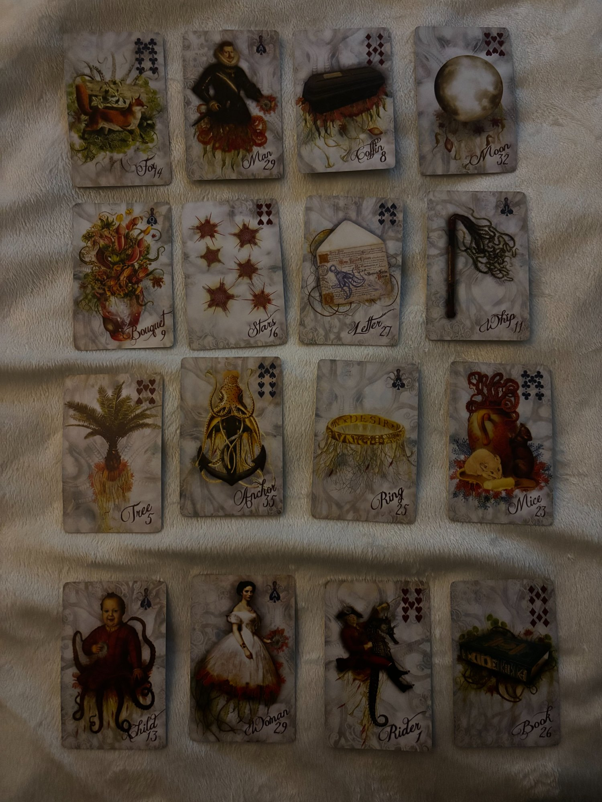
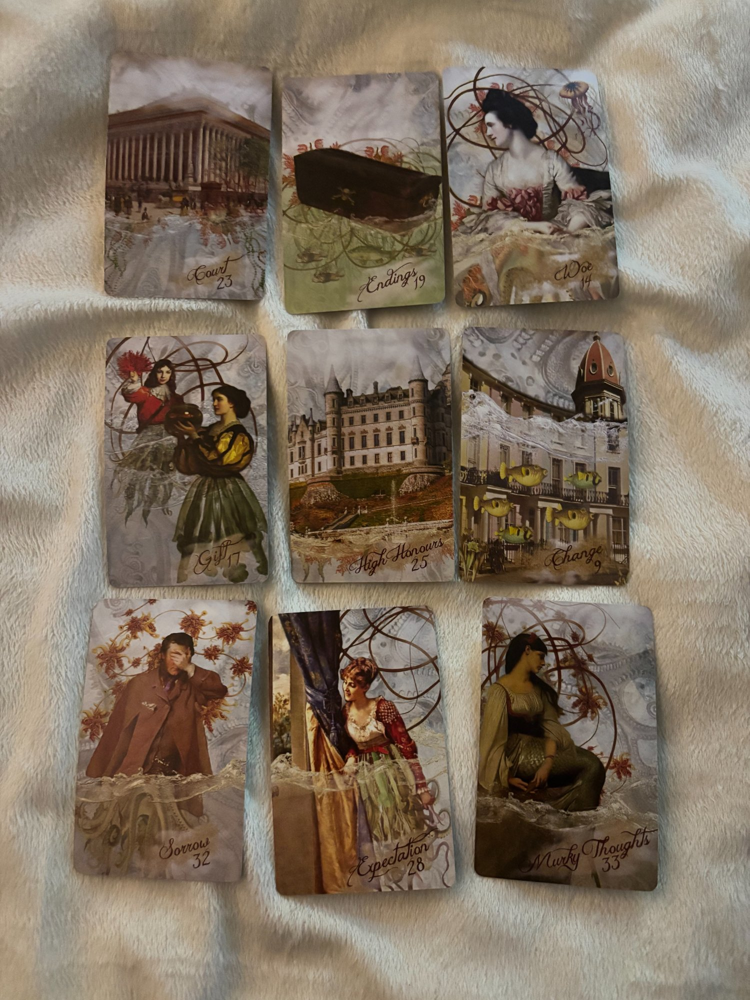
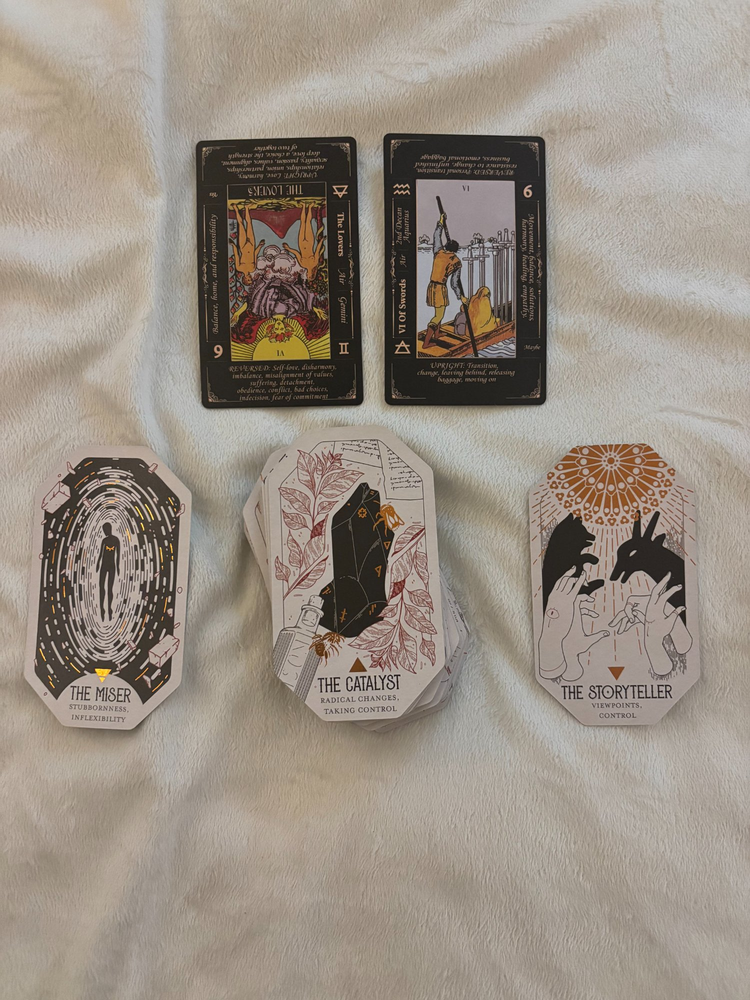

The Lenormand
External Reality · The Month's Terrain

Two stories in sixteen cards
The Lenormand is running two threads simultaneously, and they're both real. Row 1 and 3 are the male energy in this spread — and you have two significant men shaping your current landscape. The first is your father, whose situation is the engine of the Court process. The second is the man in your house. Both are here. The cards don't separate them cleanly because your life doesn't either right now. But the dominant thread when you read Woman and what surrounds her — Row 4 — is unmistakably personal, immediate, and moving.
The structural backbone of the middle rows: Stars and Anchor are the floor. Guidance and stability that hold regardless of the turbulence above and below them. Those two cards don't lie and they don't leave.
The male figure is not being straight with anyone, including himself
Fox leads, which means strategy — or deception — precedes the man in this reading. Fox before Man means he is either operating strategically and you know it, or there's a level of self-serving behavior and misdirection that's been running for a while. In the context of your father: a legal actor not revealing his full hand, or the separate incident creating complexity no one is fully disclosing. In the context of the man in your house: someone who knows how to position himself, who defaults to passivity as a strategy, who's been strategic about what he contributes and what he withholds.
Man + Coffin is one of the most unambiguous pairs in the system. Something about this man — his role, his situation, his position in your life — is ending or in the process of ending. Not necessarily him as a person. The function he's been serving, the arrangement as it exists, the dynamic that has been operating. Coffin after Man says that chapter has a closing date.
Coffin + Moon closes the row: recognition, reputation, something in the emotional or intuitive realm coming through. Moon is your inner knowing, your sense of things, your read on a situation. After Coffin it says: you already know what's ending. Your gut got there before the formal moment did.
Something welcome is coming in writing, and it arrives into conflict
Bouquet + Stars is a genuinely good opening to this row — a gift or pleasant surprise arriving under favorable guidance, something unexpected and positive heading your way. Stars elevates whatever Bouquet brings; this is not a small courtesy, it's something that hits with meaning.
Stars + Letter: the clarifying document. Written communication — a message, a document, an official notice — that carries good news or direction. In the context of the legal process: something on paper that moves things. In the context of your personal situation: a communication that clarifies something that's been murky.
Letter + Whip: and then it lands into contention. The document arrives and the fight starts, or the communication prompts argument, back-and-forth, repetitive conflict. This is Whip's territory — the same argument on a loop, the same dispute that keeps reigniting. Court papers often work exactly this way. So does a conversation with a person who can't stay out of his own way.
Something deeply rooted is being slowly eroded
Tree opens this row — deep-rootedness, health, something that has been growing for a long time, something that takes years to shift. Tree is slow by nature. It is also the card of something that has been quietly draining energy without obvious dramatic incident. When Tree leads a row that ends in Mice, you are looking at slow, sustained depletion of something that was once solid.
Anchor + Ring in the middle is the structural pair: stability and commitment directly linked. This combination is one of the most stable in the deck when it appears — long-term commitment, an obligation that holds, formal bonds that endure. In the context of the legal process: the formal structure of the divorce proceeding is holding, it's processing on its own timeline, the anchoring is real. In the context of your relationship: Anchor + Ring is an arrangement that has been holding by obligation more than by choice.
Ring + Mice: the commitment is being gnawed away. Slowly, incrementally, and it has been for a while. Mice doesn't announce itself — it works in the background, and by the time you name it the erosion has already been happening. This pair is not asking if the ring is being damaged. It is telling you it already has been.
Something new is coming toward you — but the outcome stays sealed
This is your row. Woman is your significator, and what surrounds her in Row 4 is the most personally pointed section of this spread.
Child before Woman: a new beginning is arriving at you, or you are moving into something that has the quality of a fresh start — something small but genuinely new, something that doesn't carry the full weight of what came before it. Child before the significator in Lenormand is the energy leading you into this period.
Rider after Woman: news or a person is coming toward you. Rider is movement heading in your direction — something is on its way, and it arrives with energy and speed. Not delayed. Not abstract. Coming.
Book closes the row. This is the seal on the spread — what is still private, still unknown, still not yet revealed. The outcome of what the Rider is bringing, the content of what the new chapter actually looks like — that's still in the Book. You don't have all the information yet. Book at the end of your personal row is the cards being honest: things are moving toward you and the destination is not fully visible from here.
Child + Woman + Rider is one of the more promising sequences to end on. A new beginning, your own presence, and something coming toward you. The Book doesn't erase that — it just keeps the specifics sealed for now.
The combinations doing the heavy lifting
| Pair | What it says |
|---|---|
| Fox + Man | Strategy, misdirection, or self-serving behavior precedes the man. The fox is the energy he operates in — conscious or not. Someone performing competence or investment they're not actually delivering. |
| Man + Coffin | Something about this man's role or the arrangement with him is ending. The chapter closes. Coffin does not soften this — it is a transformation card, not a cruelty card, but what it touches does not continue unchanged. |
| Stars + Letter | A positive, clarifying written communication. In legal context: a favorable document. In personal context: something on paper or in writing that brings direction. |
| Letter + Whip | The document arrives into argument. Good news doesn't land cleanly — it prompts another round. Watch for this dynamic in both the Court process and at home. |
| Anchor + Ring | Obligation holding. A commitment more structural than emotional, more contractual than chosen, that is holding its form even as the ground around it shifts. |
| Ring + Mice | The commitment is being eroded. Slowly, from the edges. This has been in progress. The question is not whether erosion is happening — it is. |
| Child + Woman | You are entering something new. A fresh start is the energy preceding you into this month. Small and real, not dramatic. |
| Woman + Rider | News or a development is coming directly to you. Not to someone else — to you. Moving fast. |
The Kipper
Situational Reality · The People & Processes

Why the free fall still works — and what it's doing
In a standard Kipper 9-card box, you anchor a significator at center and read everything in relationship to where it faces. Without Siren 2 anchored here, the center card becomes the pivot by default — that's High Honours #25. High Honours is a Stop card, meaning it holds its position and acts as the definitive statement at center. The spread is reading coherently with it there, which is the cards doing what they do regardless of setup.
Stop cards in Kipper don't flow into neighboring cards the way movement cards do — they are the answer. High Honours at center means the central truth of this situation is about formal recognition, institutional process, legal standing. That is exactly correct. This reading is new to me as a spread format too, so we're learning the mechanics together in real time — but the structure held.
High Honours holds the structure — two processes orbit it
High Honours #25 is the castle, the institution, the official standing. Formal processes, bureaucratic structures, prestige in an official sense — courts, legal systems, governmental bodies. There is nowhere more accurate for this card to land than at the center of a reading about a year-long Court case. It also speaks to the legitimacy of the process itself — the institution is real, it carries weight, and it moves on its own schedule.
Above (Court #23): The stop card describing the actual court process sits directly above High Honours — the conscious awareness, the dominant concern. Two stop cards stacked vertically say: this is fixed, this is institutional, this is not moving faster than it moves.
Left (Gift #17): Gift to the left of center is something coming toward this situation — the lucky arrival, the unexpected positive, acknowledgment or support that enters from outside. This is one of the genuinely good cards in the deck. In the context of the legal process: a favorable development approaching. In the context of what's happening at home: something arriving that loosens what has been locked in place.
Right (Change #9): Change to the right is what has been behind this, what set it in motion. Change is a movement card — something already shifted that triggered the whole configuration you're in. The cause is behind the center, in the past position. Both the Court situation and the household situation have a Change in their rearview.
Below (Expectation #28): Expectation below center is the foundation — what can be acted on right now. In Kipper, Expectation below center means the ground you're standing on is the waiting. That is not passive in a defeated sense. It's doing something. In Siren's Song she looks left at what she desires; what's behind her (right) is what put her in this state. That's Change. She's watching what comes next.
Endings is looking at Woe — Sorrow is looking at Expectation
This is where the Kipper earns its reputation. Directionality here is not decorative — it tells you what is talking to what.
Endings #19 (top center) is a movement card. In the top row, it sits between Court and Woe, and it is facing Woe — meaning the conclusion, the finality, the thing that cannot continue as it was, is oriented toward the sadness. Endings looking at Woe means what is ending carries grief with it. That's not a surprise in a divorce proceeding. Even the right resolution carries loss.
Woe #14 (top right corner): bad news, difficulty, the thing that arrives and lands hard. In the top right corner it is contextual — surrounding energy, not the core. But Endings looking directly at it is the spread saying: the conclusion and the grief are paired. One brings the other.
Sorrow #32 (bottom left): the stress card, the worry card, the sleepless nights. She is facing Expectation #28 at bottom center. Sorrow looking at Expectation is the honest emotional map: the waiting is not comfortable. The worry lives in the same breath as the patience. Both are true simultaneously. The fact that the correct move is to wait does not make the waiting peaceful.
Expectation #28 has her back toward Murky Thoughts #33 in the bottom right corner. Murky Thoughts is doubt, gloom, incomplete information. Expectation's back turned toward it means: she is not looking at the murk. She is facing forward, watching for what she desires. The incomplete picture is behind her, not in her direct line of sight. That's important. Murky Thoughts in the corner is real — you don't have all the information yet — but Expectation is not waiting in the murk. She's watching for the arrival.
What it's saying directly — and what's new this month
The Kipper is telling you what it's been telling you for months, but with new detail this month: Gift #17 is to the left of center. That is a recent addition. Something is arriving — unexpected positive movement, a favorable surprise, support or recognition entering from outside the current locked state. It is coming toward the High Honours situation. Toward the Court process. Toward the center of things.
Change #9 on the right confirms what set this in motion. The change that triggered this configuration is already behind the center. You're not at the beginning of a change. You're in the middle of one.
The message that has been consistent: the Court process has its own timeline, the separate incident is a complicating variable that needs to resolve before the main process closes cleanly, and the right action right now is not to force movement. Expectation at the foundation is not resignation — it's strategic patience with active monitoring.
The corners being difficult — Endings, Woe, Sorrow, Murky Thoughts — does not cancel the center. The center holds. High Honours + Court + Gift + Expectation is the structural spine. The corners are honest about the cost. Hard corners around a stable center means: this is genuinely difficult AND it is holding.
Tarot & Oracle
Inner Landscape · Soul Lesson · Guidance

The Lovers — Reversed
Major Arcana VI · Air · Gemini. Upright: union, alignment of values, partnership, choice, harmony. Reversed: disharmony, misalignment of values, imbalance, conflict, self-love vs. external love, difficult choices, detachment, indecision, fear of commitment, obedience.
In this reading, the Lovers Reversed is not primarily about the divorce. It is about the partnership that is closer to you right now. The values dissonance reversed Lovers describes — the imbalance, the detachment, the sense of connection that has stopped making sense — that's your house. That's an arrangement that started as a relationship and has become something else. When you're more roommates than lovers, when the emotional labor is one-sided, when you're in a space with someone and still feel alone, that is the reversed Lovers. The card is being literal about the energy in your daily environment.
Reversed Lovers also names what gets lost in that kind of imbalance: your own sense of your values. When the dynamic is dysfunctional long enough, the question of what you actually want, what you would choose if the anchor of obligation were gone, starts to blur. The card is asking you to notice that blur and take it seriously.
6 of Swords — Upright
Minor Arcana · Air · Upright: transition, moving on, change, leaving behind, releasing baggage, passage to calmer waters, mental shift, a necessary journey away from turbulence.
The 6 of Swords upright is one of the most honest transition cards in the Tarot. The figure on the boat is not celebrating. They're not looking back with longing either. They are going. There are swords still in the boat — the weight is still there, they're carrying it — but the direction is away from the churning water and toward the calmer side.
This card next to the Lovers Reversed is a sequence: the disharmony and fracture is the leaving-from, and the 6 of Swords is the direction. You're already in the boat. Not past it. Not through it. In it, moving. The swords are still in the vessel. The water isn't glassy yet. But the direction has changed.
The Lenormand's Child + Woman + Rider, the Kipper's Endings in the corner, and this 6 of Swords are all pointing at the same thing: a genuine passage is underway. Quiet, deliberate transit toward clearer water. Not dramatic. Not triumphant. Just going.
Stubbornness, Inflexibility
The Miser · Stubbornness, Inflexibility. The figure in the tunnel — isolated, circling the same space, unable or unwilling to move beyond a fixed point.
The Miser as the soul lesson card is naming the energy that has been the source of the friction — and in this reading it is not ambiguous. A man-child who games after work, who uses passivity as a strategy, who won't grow into what the situation requires, who keeps you in the same dynamic no matter how many times you arrive at the edge of it — that is The Miser's energy embodied. Circling the same space. Inflexible. Holding a position not because of strength but because movement would require accountability.
The soul lesson is yours, though. The Miser is showing you what the lesson has been: engaging indefinitely with someone who will not change is its own form of staying stuck. The stubbornness in the situation belongs to him. The lesson about what you do with it belongs to you.
Radical Changes, Taking Control
The Catalyst · Radical Changes, Taking Control. The black crystal — a force that does not move slowly. It transforms what it touches. Change that originates from action, not from passive waiting.
This is the undercurrent card — what is running beneath the surface of the entire month. And The Catalyst is not a slow card. Radical change. Taking control. This is not the legal process ticking one step forward. This is a different register entirely.
The Catalyst is active in two places this month. In the legal situation, it is the state-level incident — already in motion, already altering the nature of what's possible, the variable that changed the whole game. That Catalyst has been running for a while and you cannot accelerate it. But the second Catalyst is fresher. If he gets put out, if the arrangement breaks open, if the thing that has been stagnating in your house is finally named and acted on — that is The Catalyst energy. Radical change that originates from action, not passive waiting. The card wants to be used. It is asking who is going to pick it up.
Viewpoints, Control
The Storyteller · Viewpoints, Control. Hands, shadows, perspective — who holds the narrative and who the narrative is working on. Control through the way a situation is framed and told.
The Storyteller as guidance card is asking you to pay attention to who is controlling the narrative — and whether the story currently being told is actually yours. In the legal process: the story told through the lawyer and the court documentation is what matters; whose version is more legible to the institution shapes the outcome. The Lenormand's Fox and this Storyteller are saying the same thing through different lenses: framing is strategy.
In your personal situation: there is a story that has been running about what your arrangement is, who owes what, what's reasonable, what's temporary. That story has likely been shaped more by default and inertia than by your actual intentions. The Storyteller as guidance is asking you to become conscious about which narratives you're still maintaining that no longer serve you — and which ones you're ready to let be rewritten on your own terms.
The Storyteller closing the oracle row is not sinister. It's asking you to stay conscious about the stories in motion — the ones the court is deciding, the ones the people in your life are constructing, and the one you're telling yourself about what this time means and what you're allowed to want next.
The Full Picture
All Three Layers Together
This reading is carrying two situations at once, and they've been tangled together in your daily life for a while. They are not the same story but they are happening to the same person, and the cards are reading both.
Thread One — The Court Process: Consistent. Unchanged from previous months. Your parents' divorce has been in process for over a year, your father's separate legal situation at the state level is the complicating variable, and the guidance that has come through every time is the same: do not try to force resolution before that incident resolves. The lawyer knows this. The Kipper's High Honours + Court stacked at center says the institution is doing its thing. Expectation at the foundation is the correct posture. The Gift approaching from the left suggests something favorable is entering this situation, but it is entering on the institution's timeline, not yours. Wait. Monitor. Don't force.
Thread Two — The House Situation: This is what is new, or rather, what the cards are now identifying as the more immediate active story. The Man + Coffin in the Lenormand, the Lovers Reversed naming values dissonance and detachment in the partnership, The Miser as the soul lesson energy, The Catalyst as the undercurrent — all of this is oriented toward the arrangement that is closest to your daily life. Something about the man in your house and his role in your life is ending or being forced toward an ending. The cards are not predicting what you will do. They are naming what is already in motion underneath.
Second shift changes the rhythm of your home. You had a version of the situation that worked better — he leaves early, gets back around 2, you had a window. Now that window closes. The routine that made the arrangement more manageable is being removed. Change showing up in both the Lenormand (Row 3 context) and as the past position in the Kipper diamond is the cards acknowledging: a structural shift has happened or is about to happen that alters the daily landscape.
When The Catalyst is the undercurrent card and the routine is disrupted, when The Miser names the energy of someone who won't grow or move, when Ring + Mice says the commitment is actively eroding — the question the cards are actually asking is: what is this arrangement still serving? Not rhetorically. For real. What is it still providing, and is that provision worth the cost of continuing it?
On the legal side: do not force movement before the state-level complication resolves. That prerequisite has not changed. The Kipper is still saying wait, the structure is holding, the Gift is approaching, and the most active thing you can do right now is nothing — which is its own kind of difficult.
On the personal side: the cards are not telling you what to do. But Child + Woman + Rider at the end of the Lenormand spread — a new beginning, your own presence, news coming toward you — is an image of someone standing on the edge of something new and already moving. The 6 of Swords is already in the water. You don't have to wait for everything to resolve before the transit begins.
April is inside the waiting on the legal front. But it is not waiting everywhere. The Catalyst is the undercurrent card for the entire month — meaning it is running whether you name it or not. The question is whether you're going to be in front of that energy or behind it. The Rider is coming toward you. The Book is still sealed on what it brings. But the direction is forward, and the boat is already launched.